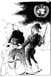

Onsdag 6. desember
Onsdag 6. desember
| LEDERE |
Morgen: Frankrike i NATO Vaktbikkje Aften: Klart signal fra Willoch |
Dagens Inge:  |
| KOMMENTAR |
SPD-leder vil gå nye veier NY KURS: Partimønsteret i Tyskland er i bevegelse. Sosialdemokratene søker kontakt med det gamle kommunistpartiets arvtagere. ULF PETER HELLSTRØM Kommentatoren er Aftenpostens korrespondent i Berlin.
Når velgerne slutter å være det |
| I DAG |
Norge og Iran DE UNDERTRYKTE: 70 millioner iranere får ikke den støtte de burde få fra Norge. NINA KARIN MONSEN Filosof og forfatter. |
|
KRONIKK |
Sabotasje mot åpenhet i departementene? INGE LORANGE BACKER OG TOR MEHL Ekspedisjonssjef dr. juris Inge Lorange Backer og lovrådgiver Tor Mehl ved Justisdepartementets lovavdeling tar til motmæle mot Aftenpostens reportasjer om departementenes praktisering av offentlighetsloven. De hevder blant annet at å føre inn allerede ved journalføringen at et dokument er unntatt fra offentlighet, ofte vil føre til mindre offentlighet - ikke større åpenhet.
|
Bakgrunn/Kommentar: Arkiv